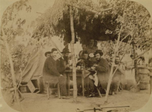
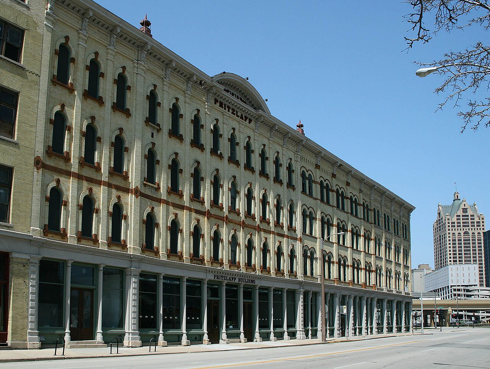
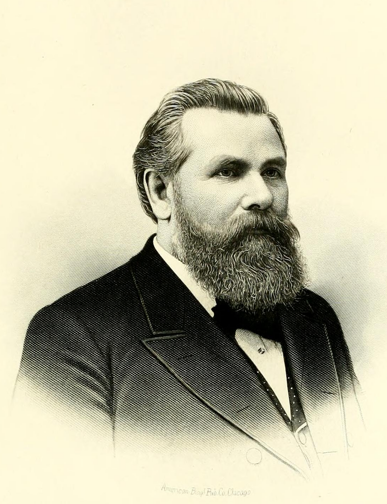

John C. Pritzlaff stands as a quintessential figure of nineteenth-century American industrialism, transforming himself from a penniless Prussian immigrant into the proprietor of the largest wholesale hardware business in the Midwestern United States. His life story is intrinsically tied to the explosive growth of Milwaukee, Wisconsin, and the expansion of the American frontier, leaving a legacy that shaped regional commerce and local architecture for over a century.
John Charles William Pritzlaff was born on March 8, 1820, in Truskolas, a small village in the province of Pomerania, Prussia (Nelke, 1895). While little is known about his early life in Prussia, he suffered a tragic blow when his father passed away in 1839, prompting the nineteen-year-old Pritzlaff to seek new opportunities in the United States (Watrous, 1909).
Following a nearly two-month transatlantic voyage, he arrived at New York Harbor on September 5, 1839 (Watrous, 1909). Rather than traveling directly to the Midwestern frontier, Pritzlaff funded his ongoing migration through strenuous manual labor, pausing his journey to work on a canal in Pennsylvania. This steady, labor-intensive migration ultimately brought him to the Wisconsin Territory in 1841, a full seven years before Wisconsin would be granted statehood.

In the rough frontier settlement of Milwaukee, Pritzlaff continued to rely on grueling manual labor to survive. He took jobs as a cook, a teamster, and a lumberjack, famously cutting timber at Schlitz Park, the location that would eventually house the Joseph Schlitz Brewing Company. His fortunes began to shift in 1843 when he was hired as a porter for the firm Shepardson and Farwell. This firm was subsequently acquired by Henry J. Nazro & Company, placing Pritzlaff squarely in the mercantile orbit.
Pritzlaff's impressive work ethic caught the attention of his employers, leading to a monumental transition from laborer to proprietor. In 1850, Henry J. Nazro stepped in as a silent partner, bearing the financial burden to help Pritzlaff and an associate, August Suelflohn, open a modest retail hardware storefront on Third Street under the name John Pritzlaff and Company.
The early years of the partnership saw rapid reorganization. By 1853, one of the original partners departed, and the other was bought out, allowing Pritzlaff to consolidate his control over the company. Through steady expansion and diligent management, Pritzlaff bought out all remaining stakes, becoming the sole owner of the enterprise by 1866.

Before achieving sole ownership, Pritzlaff navigated the tumultuous years of the American Civil War (1861–1865), which served as a major catalyst for his business. As the Union Army mobilized, the federal and state governments required immense quantities of iron goods, tools, and camp equipment. Well-positioned in the growing industrial hub of Milwaukee, Pritzlaff's hardware business secured vital supply contracts.
The firm provided essential logistical support to Wisconsin regiments and the broader Union war effort, supplying thousands of axes, shovels, horseshoes, and camp stoves. The massive influx of wartime capital and the rapid expansion of his supply chains during this period were instrumental to his success, providing the exact financial leverage Pritzlaff needed to buy out his remaining partners immediately after the war's conclusion in 1866.

The true turning point for Pritzlaff's legacy occurred in 1875 when he made the strategic decision to shift his business model away from retail and focus entirely on wholesale hardware. To facilitate this massive pivot, he relocated the company to Plankinton and St. Paul Avenues and commissioned the construction of a four-story, Italianate-style brick building which stands to this day and is listed on the National Register of Historic Places (National Park Service, 2013).
This bold gamble paid off immensely. Under his leadership, the firm became the premier iron supply house and wholesale hardware company in the Midwest. The John Pritzlaff Hardware Company dominated the regional market, selling hardware, sewing machines, and toys via mail-order catalogs to wholesale accounts throughout the United States, pre-dating Sears Roebuck by 13 years (Lallanilla, 2023). Recognizing the sheer scale of the operation, Pritzlaff formally incorporated the business in 1884, assuming the role of president. The volume of their operations was staggering, with the company's workforce expanding from 52 employees in 1881 to 450 by 1931 (Wisconsin Historical Society, 2012).

Pritzlaff's influence extended far beyond the walls of his hardware business, deeply embedding his family into the civic and religious fabric of Milwaukee. In 1844, he married Sophia Christine Blume, and together they had eight children (Watrous, 1909). Pritzlaff strategically integrated his family into his corporate empire. His daughter Elizabeth married John C. Koch, who began his career in Pritzlaff's tin shop, eventually rising to become vice president of the company. Koch's prominence in the business community later propelled him into politics, where he served two terms as the 31st mayor of Milwaukee, overseeing the design and construction of the city's iconic City Hall which at the time was briefly the tallest habitable building in the world (American Society of Civil Engineers, 2024).
.Other daughters also married company executives, including Franz Wollaeger, who became secretary and treasurer, and Herman August Luedke, who served as a vice president.
In addition to his commercial pursuits, Pritzlaff was a devout religious figure. He was a founding member and trustee of Trinity Evangelical Lutheran Church in Milwaukee, further solidifying his standing as a pillar of the local German American community.
Pritzlaff passed away on March 18, 1900, at the age of eighty. At the time of his death, he had amassed a vast industrial empire and a personal fortune estimated to be worth nearly 8 million dollars in today's inflation-adjusted currency.
His youngest son, Fred C. Pritzlaff, succeeded him as president, guiding the company through the first half of the twentieth century until his own death in 1951. Fred C. Pritzlaff is also well known as the longest owner of the Gustave Pabst mansion, occupying the property for 46 years until his death upon which he left the estate to the Lutheran Welfare Society of Wisconsin (Ryan, 2021). Under Fred’s leadership, the firm successfully navigated the economic turbulence of the Great Depression and the massive industrial shifts of two global conflicts. The company remained under family control until it finally closed its doors in 1958, culminating over a century of continuous operation.
The physical manifestation of Pritzlaff's life work remains a prominent feature of the Milwaukee skyline. The massive seven-building complex, featuring classic Italianate brickwork, decorative rooflines, and architectural additions spanning from 1875 to 1919, was added to the National Register of Historic Places in 2013 (National Park Service, 2013). Today, these buildings have been meticulously renovated into high-end apartments and event spaces, preserving Pritzlaff's indelible mark on the city's architectural and industrial history (Wisconsin Historical Society, 2012).